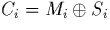
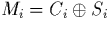
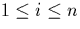
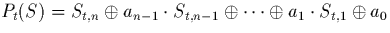
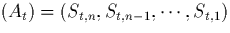
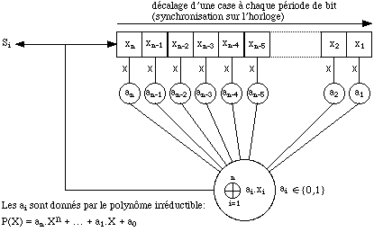
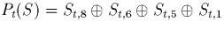
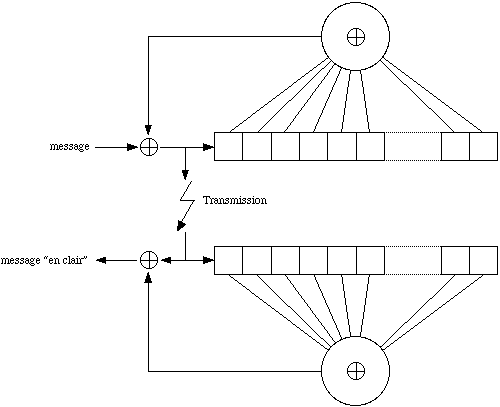
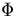

Maintenant que la transmission est tablie, l'on peut se pencher sur un
point optionnel, savoir le cryptage des donnes. L'intrt de cette
dernire tape consiste en la scurisation de la liaison, en rendant
illisibles les donnes quiconque ne possdant pas une cl de
dchiffrement.
Lorsque l'information se voit transmise par voie analogique, l'on peut bien
sr la brouiller l'aide de signaux ayant l'apparence de bruit. Mais ces
techniques de brouillage se montrent rapidement limites, aussi apparat l
un autre avantage de la conversion numrique, savoir celui de pouvoir
appliquer de puissants algorithmes de cryptage, celui de pouvoir
relativement facilement manipuler les messages numriques.
Il a t retenu pour cette tude un principe de cryptage assez simple, du moins dans sa mise en oeuvre, puisqu'il suffit de modifier pseudo-alatoirement un un les bits que l'on transmet, et de modifier en sens inverse les bits que l'on reoit l'aide de la mme squence pseudo-alatoire: si dsigne l'addition binaire (addition modulo 2 ou, ce qui est quivalent, le "ou exclusif") et si Mi, Si et Ci reprsentent respectivement les bits l'instant t=i du message en clair, de la squence pseudo-alatoire et du message crypt, on a

et, bien sr, on rcupre Mi par l'opration
.La squence selon laquelle les bits sont modifis est pseudo-alatoire, et non compltement alatoire, justement parce que l'on connat l'avance par calcul cette squence, mais qu'elle "parat" alatoire tous ceux qui ne connaissent pas la manire de la gnrer. Elle est ralise l'aide d'un systme de registre binaire dcalage (de n bits, contenant les bits St,i pour

et t quelconque) boucl sur lui-mme et de "ou exclusif" (cf figure 5.1), montage qui ralise l'opration
chaque instant t (le registre doit tre dcalage car (t+1), l'on doit avoir: St+1,n=Pt(S)).
En effet, l'on peut montrer que ce polynme, s'il est primitif ,
gnre une suite (At) de squences de n bits (les squences
,
gnre une suite (At) de squences de n bits (les squences

, chaque instant t) dont la priode de rapparition est maximale et gale 2n-1.


(ce qui donne une priode de 28-1=255 itrations avant de retrouver la mme squence), mais nous aurions pu utiliser d'autres polynmes afin d'augmenter ou de diminuer la priode de retour une valeur donne de la suite des squences (At).Ce mode de cryptage est parfaitement inversible, mais un problme se pose toutefois pour dcrypter un message: la ncessit d'une synchronisation entre les bits Si de l'metteur qui cryptent les bits du message, et les bits Si du rcepteur qui le dcryptent. S'il y a le moindre dcalage, le message crypt ne pourra plus tre lu, et le possesseur de la cl de cryptage (la cl est le polynme Pt(S)) n'aura alors plus aucun avantage sur ceux qui ne la connaissent pas... Aussi, pour palier ce problme, il suffit de modifier lgrement l'installation prcdente afin de rendre le circuit du ct rcepteur "auto-synchronisable", i.e. dont les squences At deviennent identiques au bout d'un certain temps (dont le maximum correspond un passage de n bits, ce qui est trs faible en gnral, n tant le nombre de bits dans une squence At) celles du circuit ct metteur (cf figure 5.2).

L'inconvnient, certes majeur, de cette solution, est qu'il devient facile
de dcrypter les messages ds lors que l'on connat le nombre de bits d'une
squence et que l'on sait que la mthode de cryptage employe est celle-l.
En effet, pour un nombre donn de bits dans une squence, il n'y a qu'un
polynme irrductible, bien connu, et comme le systme rcepteur est
auto-synchronisable, il se configurera tout seul sans besoin d'une
quelconque autre cl inconnue. Le systme de cryptage devient donc, dans
cette configuration, plutt un systme de brouillage...
Le circuit crypteur doit se placer en amont de la phase de codage-modulation-transposition, l o le signal demeure sous forme numrique NRZ (0 ou 1 pendant toute la priode d'horloge). Ainsi, mme les mots de synchronisation seront crypts! Mais tels que se prsentent les botiers de traitement numrique, il n'y a pas d'autre solution. D'autre part, le circuit dcrypteur devrait normalement se placer en aval de la partie traitant la rcupration du signal numrique (rcupration du signal d'horloge) et en amont de la synchronisation par mots de 24 bits (pour que ces derniers soient en clair, sans quoi le botier, ne "connaissant" pas la cl de cryptage, ne pourra jamais les reconnatre). Mais, cet endroit, le signal est sous forme Bi

, ce qui le rend inexploitable par le circuit de dcryptage. Pour ce problme, on n'a trouv qu'une solution: monter en srie, l'un derrire l'autre, les deux circuits de cryptage et de dcryptage, au niveau du dispositif metteur, juste avant l'opration de codage numrique (passage de la forme NRZ la forme Bi). videmment, l'intrt pratique de cette solution s'avre limit, si ce n'est qu'elle nous a permis de nous familiariser avec les techniques de cryptage, et d'en mettre une compltementen oeuvre, ce qui n'est tout de mme dj pas trop mal!Afin d'obtenir un systme sans auto-synchronisation, il faudrait pouvoir installer le circuit de cryptage en amont du codage de Hamming et donc de la synchronisation (sur le dispositif d'mission), et celui de dcryptage en aval de la synchronisation et de la correction d'erreurs (sur le dispositif de rception). Ds lors, l'on pourrait insrer, aux cts du circuit de synchronisation, un systme permettant d'mettre des mots d'initialisation des squences de cryptage: chaque fois que ces mots seraient mis, du ct de l'metteur, la squence de cryptage serait rinitialise, et chaque fois qu'ils seraient lus, du ct du rcepteur, la squence de dcryptage subirait le mme sort que sa consur de cryptage. Cette rinitialisation (occurant une certaine frquence, par exemple 1Hz) permettrait donc de synchroniser les squences de cryptage et de dcryptage, au cas o ces dernires n'agiraient plus de concert, la suite par exemple d'un bit transmis erron mais non dtect comme tel. Avec une frquence de rinitialisation de 1Hz, la dure maximale de conversation non convenablement dcrypte serait de 1s, ce qui semble honnte. Remarquons, enfin, qu'initialiser les squences de cryptage avec une frquence de 1Hz revient modifier 1 srie de squences toutes les 10000/255 = 39 (par seconde, il y a transmission de 10000 bits, et une srie contient normalement 255 squences de cryptage, ce qui correspond donc 255 dcalages de 1 bit), ce qui est encore assez peu pour que les squences ne puissent plus tre considres comme alatoires.